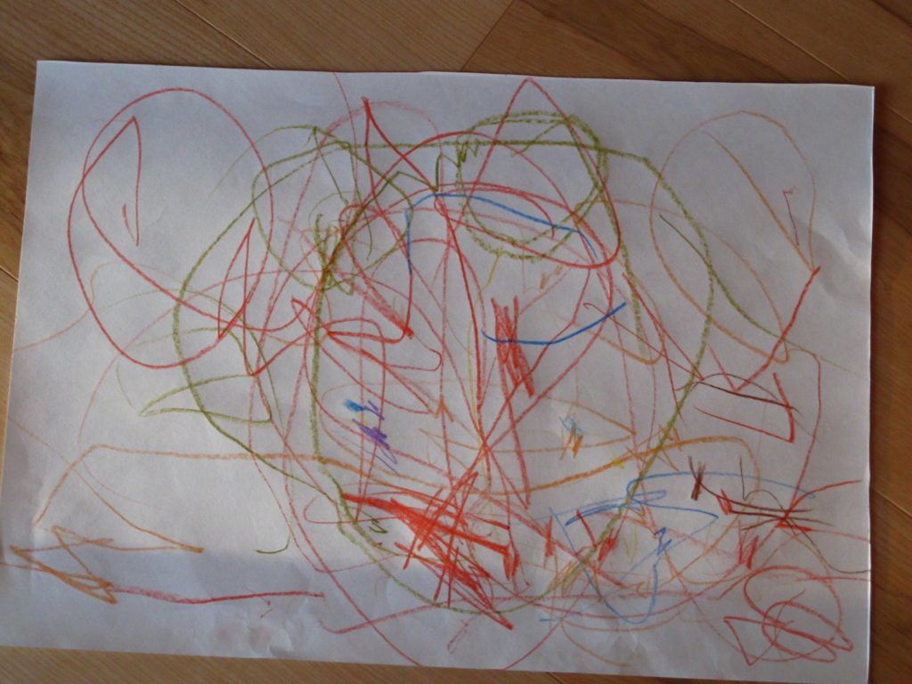
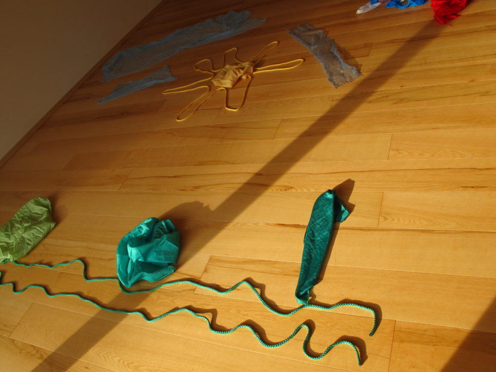
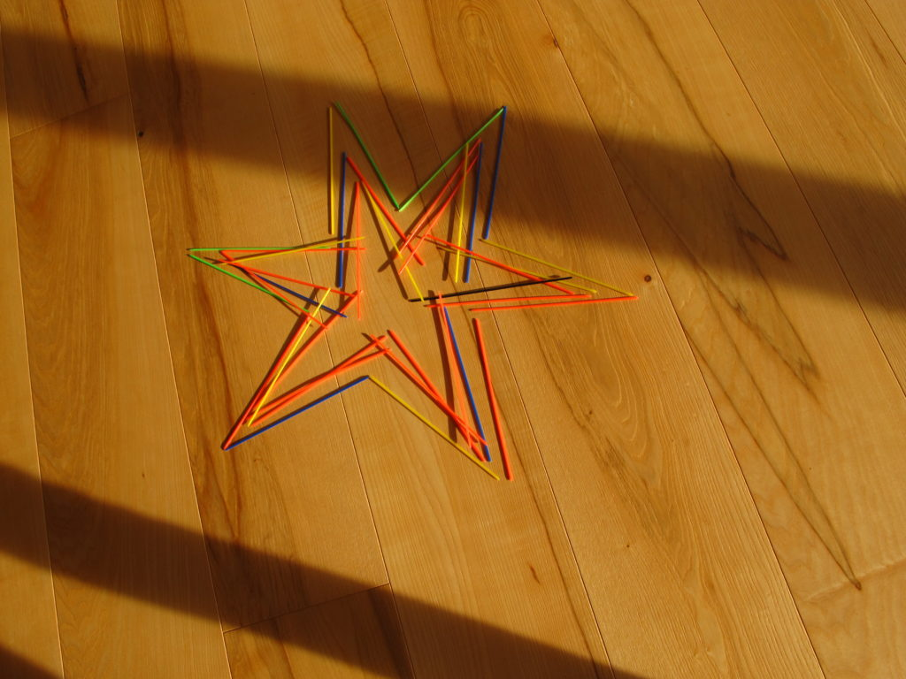

Scrivere, come disegnare, è lasciare una traccia di sé: un modo di esprimersi e comunicare.
Nei primi anni il bambino comunica con il corpo e con il gesto, lasciando spontaneamente tracce sui vetri appannati, sui muri, nella sabbia e sul pavimento. Lo scarabocchio continua questa avventura e risponde al bisogno profondo di lasciare un segno della propria presenza.
Sostenere questa espressione spontanea significa accompagnare lo sviluppo in modo armonico.



Quando può essere utile
La grafomotricità è rivolta a bambini, ragazzi e adulti lungo tutto l’arco della scolarità. Può essere utile quando emergono rifiuto del disegno, difficoltà spaziali, scrittura inadeguata, tensioni o dolori durante la scrittura.
L’intervento favorisce il gesto grafico come mezzo di espressione e consolida le basi dell’apprendimento di scrittura e lettura. Può aiutare a prevenire o affrontare difficoltà grafiche, posturali e di concentrazione.
L’intervento
Il lavoro in piccoli gruppi, a partire dai quattro anni e per fasce d’età, favorisce la relazione fra motricità e disegno, lo sviluppo spazio-temporale e le basi di una corretta gestualità grafica.